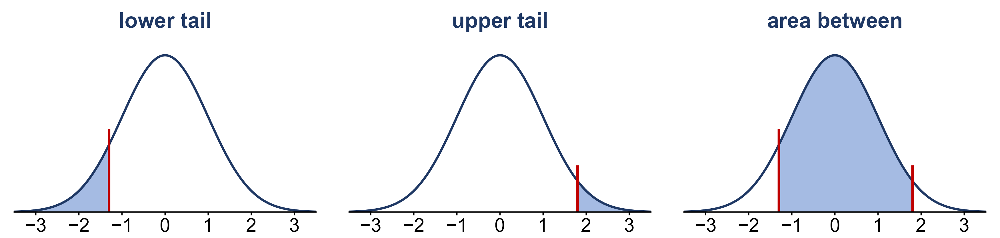
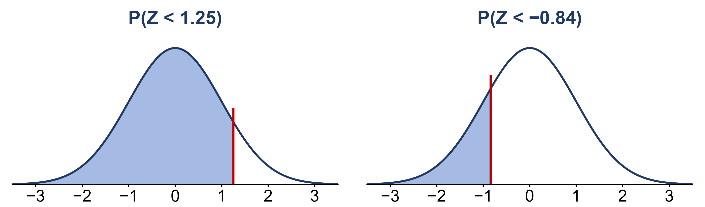
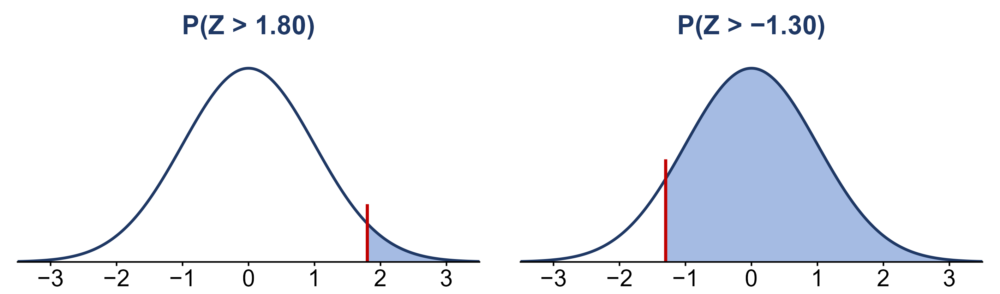
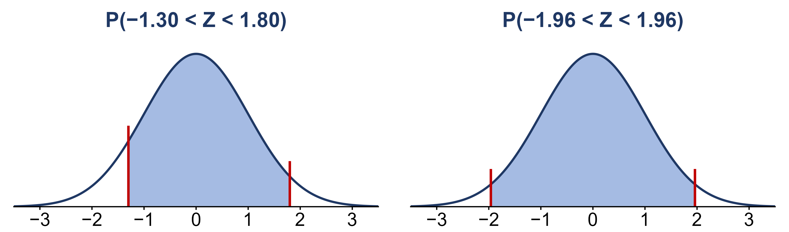
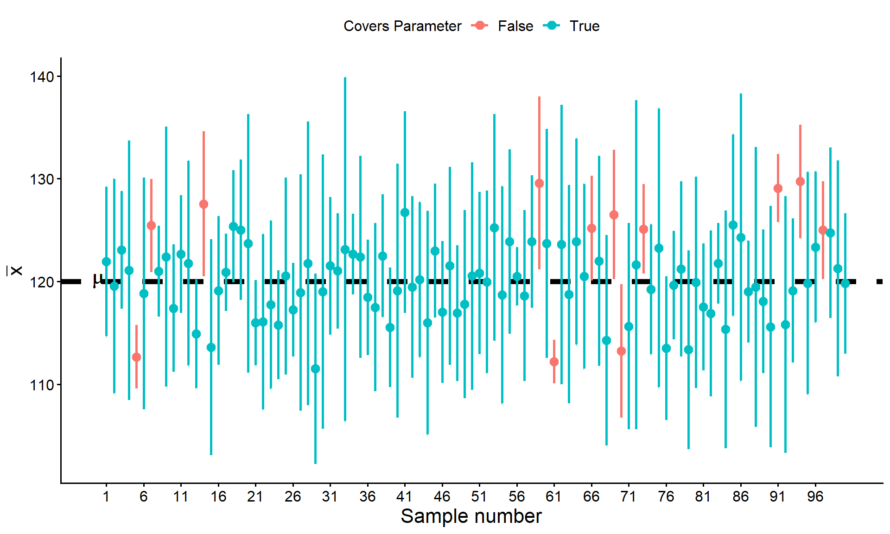
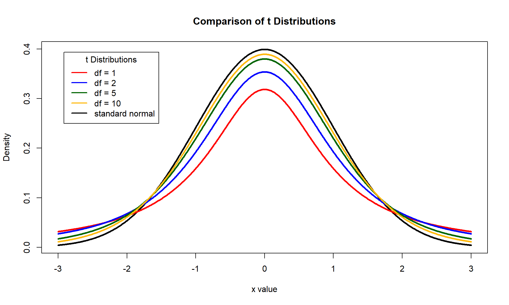

In Week 7 we said that for a continuous random variable, probability is area under the density curve, and that a single value has probability zero, \(P(X = c) = 0\). So the questions we ask about a continuous variable are always about an interval: below some value, above it, or between two values. For the normal distribution those areas come from the standard normal table (the \(z\)-table), which we first used in Week 6.
The catch is that the table gives only one kind of area: the area to the left of \(z\), \(P(Z \leq z)\), where \(Z \sim N(0, 1)\) is the standard normal. Every other area has to be built out of that one.

Because \(P(Z = z) = 0\), it does not matter whether the inequality is \(<\) or \(\leq\). Always sketch the curve and shade the area first: the picture tells you which rule to use, and whether your answer should be big or small.


The normal curve is symmetric, so the area to the right of \(-1.30\) is the same as the area to the left of \(+1.30\): the table gives \(P(Z \leq 1.30) = 0.9032\), the same answer.

Remember that second one. Exactly 95% of a normal distribution lies within 1.96 standard deviations of the mean; the empirical rule’s “2” is that number rounded. It is where the 2 in a 95% confidence interval comes from.
For \(Z \sim N(0, 1)\), sketch and shade each area, then use the table:
Answers:
The same three rules work for any normal variable \(X \sim N(\mu, \sigma)\): first convert each value to a \(z\)-score, \(z = (x - \mu)/\sigma\), then find the area for \(Z\). For example, if \(X \sim N(5, 10)\), then \(P(X \geq 25) = P(Z \geq 2) = 1 - 0.9772 = 0.0228\). The central limit theorem uses exactly this, with the standard error in place of \(\sigma\): see “A tournament’s average” on the Week 8 page, where \(P(\bar{x} \geq 3) = P(Z \geq 1.51) = 1 - 0.9345 = 0.0655\).
The rest of Lecture 19 finished the Week 8 material: the central limit theorem, the CLT for a proportion, the “within 2 standard errors” probability statements, and the 95% confidence interval for a mean, \(\bar{x} \pm 2\sigma/\sqrt{n}\). Read it on the Week 8 notes page, from “The central limit theorem” to the end.
The interval for a mean was point estimate \(\pm\) 2 standard errors. The same idea works for a proportion. By the CLT, for large \(n\) the sample proportion \(\hat{p}\) is approximately normal with mean \(p\) and standard error \(\sqrt{p(1 - p)/n}\), so about 95% of samples give a \(\hat{p}\) within 2 standard errors of \(p\). Turning that around, as we did for the mean:
\[\hat{p} \;\pm\; 2\sqrt{\frac{\hat{p}(1 - \hat{p})}{n}}\]
is a 95% confidence interval for \(p\). There is one change from the formula for the standard error: we do not know \(p\) (that is what we are estimating), so the standard error uses \(\hat{p}\) in its place.
When it works. The interval leans on the CLT, so check that there are enough successes and failures in the sample: \(n\hat{p} > 5\) and \(n(1 - \hat{p}) > 5\).
In Week 1 we met a Pew Research Center survey that asked 743 U.S. teens aged 13 to 17, “Are you losing focus in class by checking your cell phone?” The published counts are:
| Response | Teens |
|---|---|
| Never | 289 |
| Rarely | 216 |
| Sometimes | 178 |
| Often | 60 |
| Total | 743 |
Call a teen a “success” if they answered “sometimes” or “often”:
Estimate \(p\), the proportion of all U.S. teens who lose focus in class sometimes or often.
We would report it as: “We estimate with 95% confidence that between 28.6% and 35.4% of U.S. teens lose focus in class sometimes or often by checking their phones.” As with the mean, the 95% describes the method: about 95% of samples of 743 teens would give an interval that captures \(p\).
Last week we introduced the confidence interval which is used to estimate a parameter with an interval of values. We can choose how wide to make the confidence interval by selecting the confidence level - which is the probability that the interval will contain the true parameter value before the data are gathered. The confidence level is controlled via the standard score \(z\). The standard score gives the number of standard errors to add and subtract from our estimate. Therefore, we must look up the appropriate standard score \(z\) from the standard normal table.
From last week we saw that for a \(95\%\) confidence interval, we must add and subtract approximately \(z=2\) standard errors from our estimate \(\bar{x}\) or \(\hat{p}\). \(z\) is sometimes referred to as the critical value. The critical value denotes the upper and lower bounds of the confidence interval. In general, if we wish to compute the \(100(1-\alpha)\%\) confidence interval for the statistics \(\bar{x}\) or \(\hat{p}\), then we must add and subtract \(z_{1-\alpha/2}\) standard errors. The quantity \(\alpha/2\) denotes the area that is divided among the two tails of the standard normal distribution. For example, for a \(95\%\) confidence interval \(\alpha = 0.05\) and \(\alpha/2 = 0.025\).
For example, for a \(90\%\) confidence \(\alpha = 0.1\), and the corresponding critical value is \(z_{1-0.1/2} = z_{0.95}\) which is the 95th percentile from the standard normal distribution. The table below gives several confidence levels, the corresponding values of \(\alpha\) and critical values.
| Confidence Level | \(\alpha\) | critical value: \(z_{1-\alpha/2}\) |
|---|---|---|
| \(80\%\) | 0.20 | 1.28 |
| \(85\%\) | 0.15 | 1.44 |
| \(90\%\) | 0.10 | 1.64 |
| \(95\%\) | 0.05 | 1.96 |
| \(99\%\) | 0.01 | 2.58 |
Recall the confidence interval that we introduced for estimating the population mean:
\[ \bar{x} \pm z\frac{\sigma}{\sqrt{n}} \]
The confidence interval above is based on the assumption that the population standard deviation \(\sigma\) is known. When \(\sigma\) is known the sampling distribution of the \(\bar{x}\) is approximately \(N(\mu, \sigma/\sqrt{n})\). However, we rarely know the value of \(\sigma\) so we must approximate its value with the sample standard deviation \(s\) to get
\[ \bar{x} \pm z\frac{s}{\sqrt{n}} \]
Unfortunately, the confidence level of the confidence interval above will tend to be less than specified. As a result, more confidence intervals will fail to cover the true parameter value than expected.

Figure: Each point represents the sample mean from a hypothetical sample of 5 college students. The whiskers extending from each point give the coverage of the confidence interval computed for each sample. The black dotted line gives the value of hypothetical population mean time spent on social media. The CI’s highlighted in red represent those that fail to capture the population mean
Based on the plot and example above, the actual proportion of confidence intervals that fail to capture the population mean is \(12\%\), which is much higher than the expected frequency of only \(5\%\). This occurs because when we substitute \(s/\sqrt{n}\) for \(\sigma/\sqrt{n}\) the standardized statistic \(\frac{\bar{x}-\mu}{s/\sqrt{n}}\) no longer follows a standard normal distribution. Instead, it follows a distribution called the \(t\)-distribution.
Like the normal distribution, the \(t\) distribution is a bell curve but it has “heavier tails” - that is to say, it has more probability density in the tails of the distribution.

The amount of probability density in the tails of a \(t\) distribution is controlled by the degrees of freedom of the distribution. The confidence interval for \(\mu\) that uses \(s/\sqrt{n}\) instead of \(\sigma/\sqrt{n}\) is given by
\[ \bar{x} \pm t\frac{s}{\sqrt{n}} \]
The quantity \(t\) is called the \(t\)-score and is the \(1-\alpha/2\) percentile of \(t\)-distribution with \(n-1\) degrees of freedom denoted \(t(n-1)\). Like the standard score \(z\), we must look up the \(t\)-score corresponding to the desired confidence level from a \(t\)-distribution table:
| Upper tail | 0.25 | 0.2 | 0.15 | 0.125 | 0.1 | 0.075 | 0.05 | 0.025 | 0.005 | 0.0025 | 5e-04 |
|---|---|---|---|---|---|---|---|---|---|---|---|
| Two tail | 0.5 | 0.4 | 0.3 | 0.25 | 0.2 | 0.15 | 0.1 | 0.05 | 0.01 | 0.005 | 0.001 |
| \(DF\) | |||||||||||
| 1 | 1 | 1.376 | 1.963 | 2.414 | 3.078 | 4.165 | 6.314 | 12.706 | 63.657 | 127.321 | 636.619 |
| 2 | 0.816 | 1.061 | 1.386 | 1.604 | 1.886 | 2.282 | 2.92 | 4.303 | 9.925 | 14.089 | 31.599 |
| 3 | 0.765 | 0.978 | 1.25 | 1.423 | 1.638 | 1.924 | 2.353 | 3.182 | 5.841 | 7.453 | 12.924 |
| 4 | 0.741 | 0.941 | 1.19 | 1.344 | 1.533 | 1.778 | 2.132 | 2.776 | 4.604 | 5.598 | 8.61 |
| 5 | 0.727 | 0.92 | 1.156 | 1.301 | 1.476 | 1.699 | 2.015 | 2.571 | 4.032 | 4.773 | 6.869 |
| 6 | 0.718 | 0.906 | 1.134 | 1.273 | 1.44 | 1.65 | 1.943 | 2.447 | 3.707 | 4.317 | 5.959 |
| 7 | 0.711 | 0.896 | 1.119 | 1.254 | 1.415 | 1.617 | 1.895 | 2.365 | 3.499 | 4.029 | 5.408 |
| 8 | 0.706 | 0.889 | 1.108 | 1.24 | 1.397 | 1.592 | 1.86 | 2.306 | 3.355 | 3.833 | 5.041 |
| 9 | 0.703 | 0.883 | 1.1 | 1.23 | 1.383 | 1.574 | 1.833 | 2.262 | 3.25 | 3.69 | 4.781 |
| 10 | 0.7 | 0.879 | 1.093 | 1.221 | 1.372 | 1.559 | 1.812 | 2.228 | 3.169 | 3.581 | 4.587 |
| 11 | 0.697 | 0.876 | 1.088 | 1.214 | 1.363 | 1.548 | 1.796 | 2.201 | 3.106 | 3.497 | 4.437 |
| 12 | 0.695 | 0.873 | 1.083 | 1.209 | 1.356 | 1.538 | 1.782 | 2.179 | 3.055 | 3.428 | 4.318 |
| 13 | 0.694 | 0.87 | 1.079 | 1.204 | 1.35 | 1.53 | 1.771 | 2.16 | 3.012 | 3.372 | 4.221 |
| 14 | 0.692 | 0.868 | 1.076 | 1.2 | 1.345 | 1.523 | 1.761 | 2.145 | 2.977 | 3.326 | 4.14 |
| 15 | 0.691 | 0.866 | 1.074 | 1.197 | 1.341 | 1.517 | 1.753 | 2.131 | 2.947 | 3.286 | 4.073 |
| 16 | 0.69 | 0.865 | 1.071 | 1.194 | 1.337 | 1.512 | 1.746 | 2.12 | 2.921 | 3.252 | 4.015 |
| 17 | 0.689 | 0.863 | 1.069 | 1.191 | 1.333 | 1.508 | 1.74 | 2.11 | 2.898 | 3.222 | 3.965 |
| 18 | 0.688 | 0.862 | 1.067 | 1.189 | 1.33 | 1.504 | 1.734 | 2.101 | 2.878 | 3.197 | 3.922 |
| 19 | 0.688 | 0.861 | 1.066 | 1.187 | 1.328 | 1.5 | 1.729 | 2.093 | 2.861 | 3.174 | 3.883 |
| 20 | 0.687 | 0.86 | 1.064 | 1.185 | 1.325 | 1.497 | 1.725 | 2.086 | 2.845 | 3.153 | 3.85 |
| 21 | 0.686 | 0.859 | 1.063 | 1.183 | 1.323 | 1.494 | 1.721 | 2.08 | 2.831 | 3.135 | 3.819 |
| 22 | 0.686 | 0.858 | 1.061 | 1.182 | 1.321 | 1.492 | 1.717 | 2.074 | 2.819 | 3.119 | 3.792 |
| 23 | 0.685 | 0.858 | 1.06 | 1.18 | 1.319 | 1.489 | 1.714 | 2.069 | 2.807 | 3.104 | 3.768 |
| 24 | 0.685 | 0.857 | 1.059 | 1.179 | 1.318 | 1.487 | 1.711 | 2.064 | 2.797 | 3.091 | 3.745 |
| 25 | 0.684 | 0.856 | 1.058 | 1.178 | 1.316 | 1.485 | 1.708 | 2.06 | 2.787 | 3.078 | 3.725 |
| 26 | 0.684 | 0.856 | 1.058 | 1.177 | 1.315 | 1.483 | 1.706 | 2.056 | 2.779 | 3.067 | 3.707 |
| 27 | 0.684 | 0.855 | 1.057 | 1.176 | 1.314 | 1.482 | 1.703 | 2.052 | 2.771 | 3.057 | 3.69 |
| 28 | 0.683 | 0.855 | 1.056 | 1.175 | 1.313 | 1.48 | 1.701 | 2.048 | 2.763 | 3.047 | 3.674 |
| 29 | 0.683 | 0.854 | 1.055 | 1.174 | 1.311 | 1.479 | 1.699 | 2.045 | 2.756 | 3.038 | 3.659 |
| 30 | 0.683 | 0.854 | 1.055 | 1.173 | 1.31 | 1.477 | 1.697 | 2.042 | 2.75 | 3.03 | 3.646 |
| 40 | 0.681 | 0.851 | 1.05 | 1.167 | 1.303 | 1.468 | 1.684 | 2.021 | 2.704 | 2.971 | 3.551 |
| 50 | 0.679 | 0.849 | 1.047 | 1.164 | 1.299 | 1.462 | 1.676 | 2.009 | 2.678 | 2.937 | 3.496 |
| 100 | 0.677 | 0.845 | 1.042 | 1.157 | 1.29 | 1.451 | 1.66 | 1.984 | 2.626 | 2.871 | 3.39 |
| Z-score | 0.674 | 0.842 | 1.036 | 1.15 | 1.282 | 1.44 | 1.645 | 1.96 | 2.576 | 2.807 | 3.291 |
| Confidence Level: | \(50\%\) | \(60\%\) | \(70\%\) | \(75\%\) | \(80\%\) | \(85\%\) | \(90\%\) | \(95\%\) | \(99\%\) | \(99.5\%\) | \(99.9\%\) |
The table for the \(t\) distribution is organized a little bit differently than the one we’ve seen previously for the standard normal distribution. The left-most column gives the degrees of freedom, columns give the different upper tail and two tail probabilities, and the values in the middle of the table are the \(t\) scores that correspond to those probabilities.
Use the table above to verify that the following \(t\)-scores corresponding to each confidence level and sample size are correct.
| Confidence Level | Sample size | \(\alpha\) | critical value: \(t_{1-\alpha/2}\) |
|---|---|---|---|
| \(90\%\) | \(n = 3\) | 0.10 | 2.92 |
| \(85\%\) | \(n = 5\) | 0.15 | 1.78 |
| \(95\%\) | \(n = 10\) | 0.05 | 2.26 |
| \(99\%\) | \(n = 14\) | 0.01 | 3.01 |
| \(80\%\) | \(n = 22\) | 0.20 | 1.32 |
One nice property of the \(t\)-distribution is that it converges to the standard normal distribution as \(n\) goes to infinity. Stated another way, a \(t\)-distribution with \(\infty\) degrees of freedom is exactly the standard normal distribution. This means that with large enough sample size, both the confidence interval based on the standard normal distribution and the one based on the \(t\) distribution should yield nearly identical results. In fact, for \(n \geq 30\) the difference between the standard normal distribution and \(t\)-distribution is nearly indistinguishable.